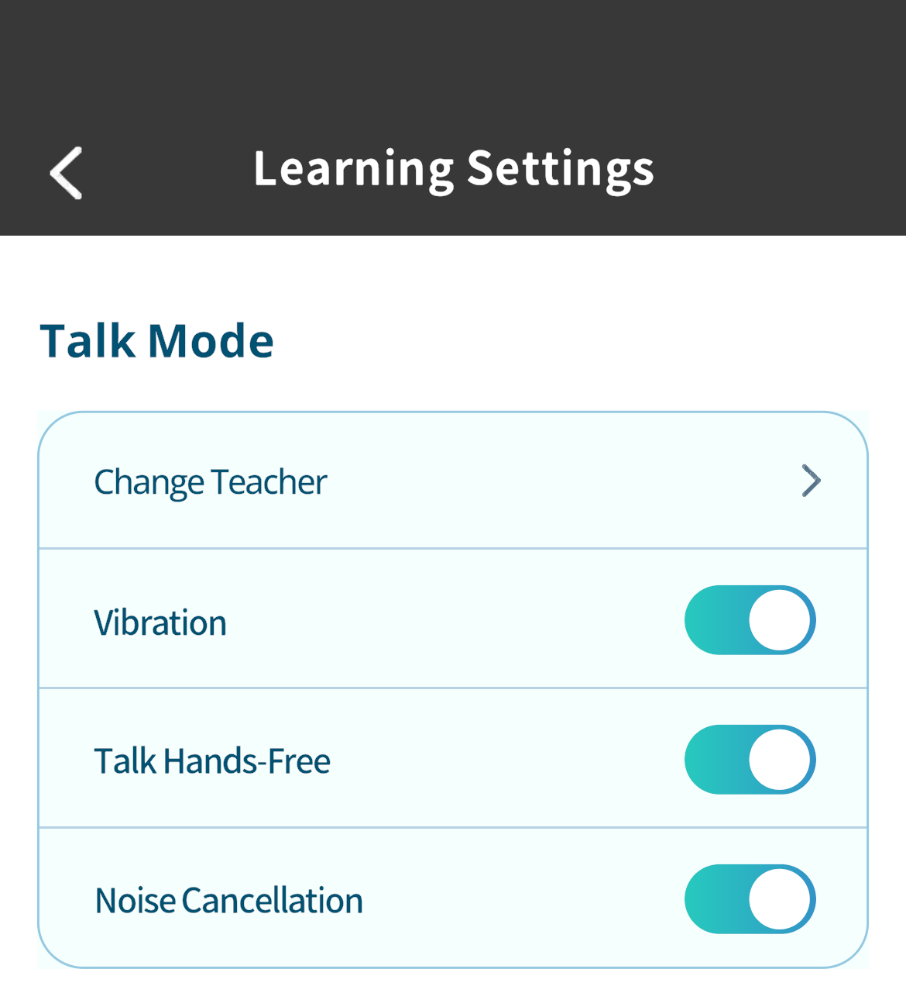
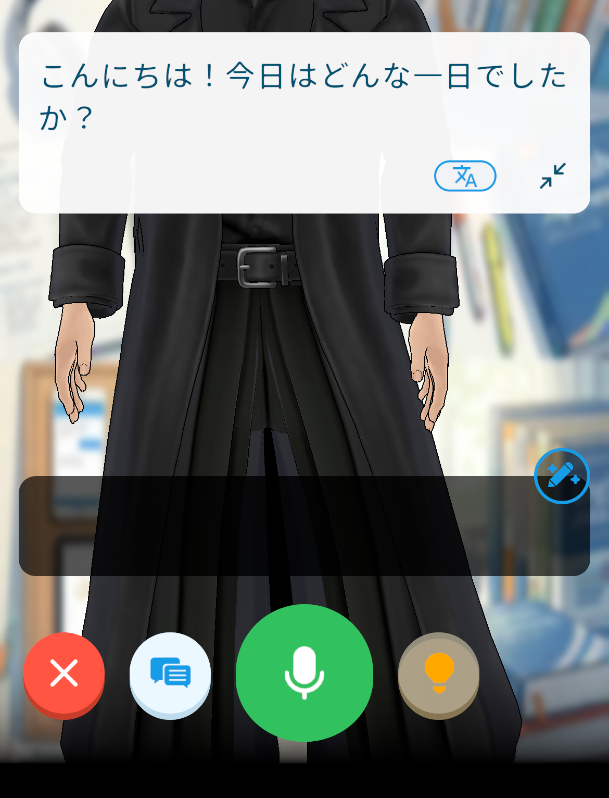
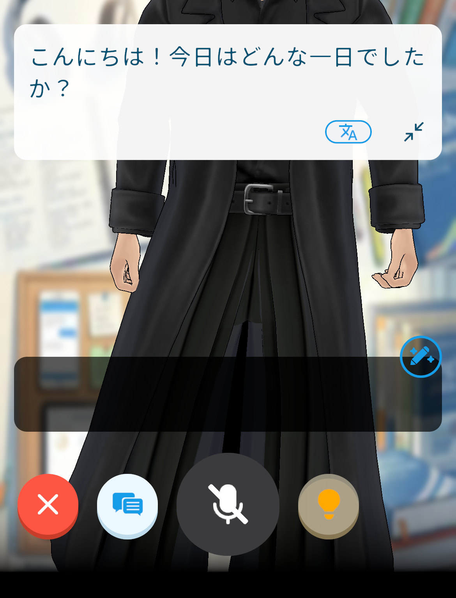
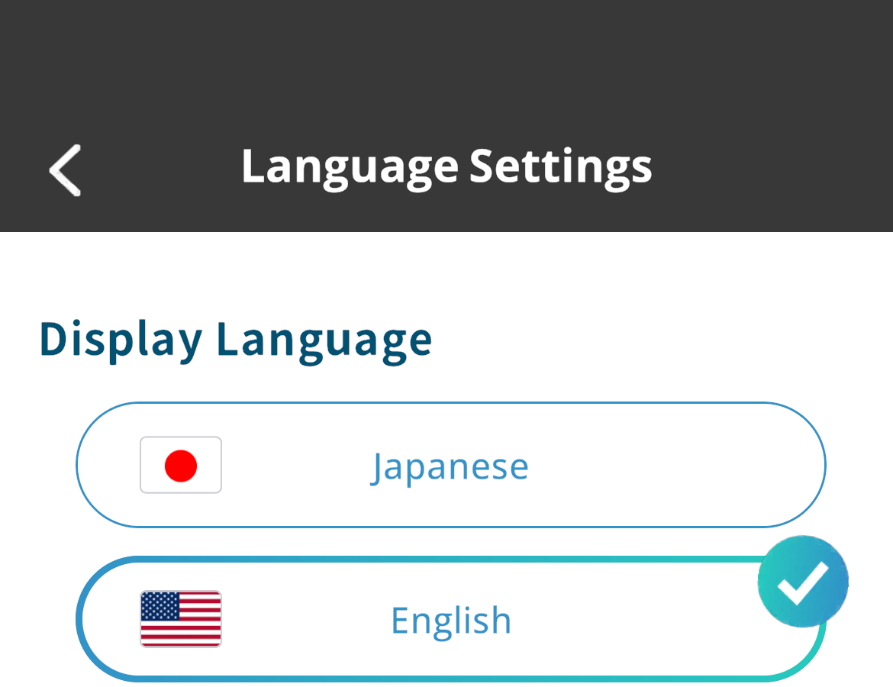
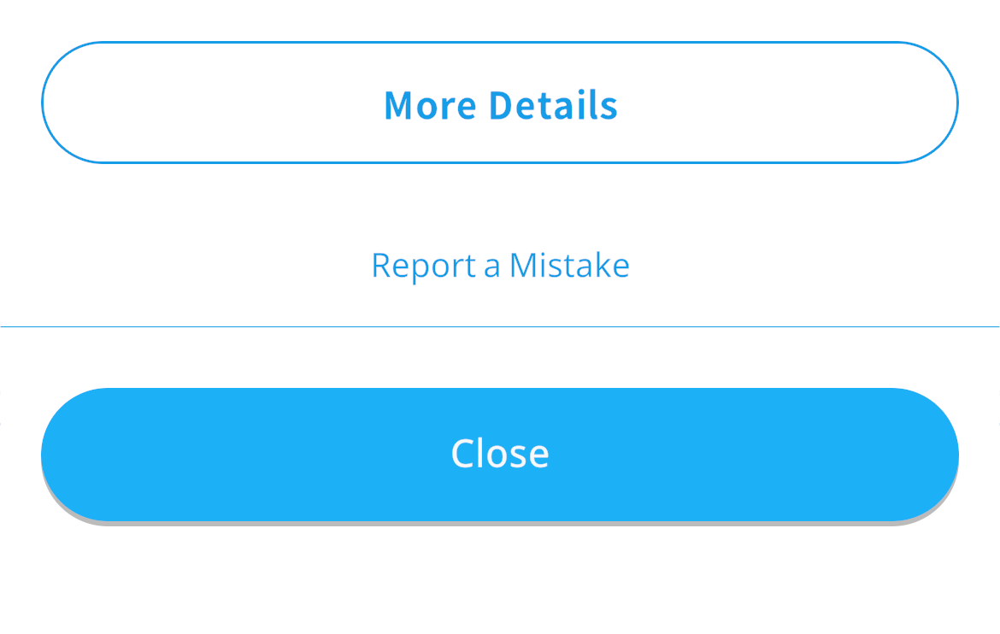

Talk Hands-Free, English Display,
and More:
4 New Features and Improvements
2026/9/24 17:00
Hi, this is Kamiya, the developer of Motitan and Motispi.
Starting with v12.0.0, you get hands-free talking without pressing the mic, English display with Japanese courses, and a new "More Details" button in Word Details. We also made an improvement that reduces battery drain.
Motispi: Talk Hands-Free Without Pressing the Mic
In Talk, you can now speak without pressing the mic button.
- When it is on, you can hold a conversation without pressing the mic button.
- While it is on, pressing the mic button mutes your voice.



How to set it up: Profile > Settings > Learning Settings > Talk Hands-Free
* You can also switch it from the settings screen before starting a conversation. It is off by default.
Motitan & Motispi: English Added as a Display Language
You can now switch the app display to English. In English, you can learn Japanese, Chinese, Korean, French, Spanish, and German.
- The first time you switch, you will also choose the language you want to learn and a course.

How to switch: Profile > Settings > Language Settings > Display Language
Motitan & Motispi: Japanese Courses Added
With the display language set to English, you can choose Japanese as the language to learn.
- Motitan Japanese courses: Conversation, JLPT, Kids
- Motispi Japanese courses: Daily Conversation, Business, Travel, Study Abroad, Kids, JLPT
- In Motispi Talk, you can have conversations with Nathan in Japanese (when Japanese is your learning language, the teacher speaks Japanese).

* These courses are for people overseas who want to learn Japanese, and for English speakers close to you.
Motitan & Motispi: "More Details" Added to Word Details
We added a "More Details" button at the bottom of Word Details.
- Tap it to open that word's page in the MotiTan English Dictionary (website) inside the app.
- You can find information that Word Details does not have, such as example sentences by level, common patterns, words often used together, common mistakes, FAQs, and learning data.

* The button is not shown for words in languages that have no dictionary.
Motitan & Motispi: Reduced Battery Drain
We made an improvement that reduces battery drain. No settings are needed.
Sou Kamiya, Developer